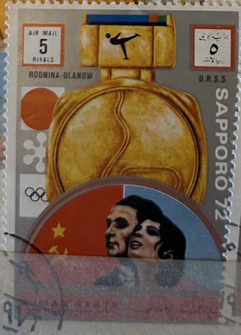
| SOURCE | TITLE| IMAGE MATCH | click to source page |
| commons.wikimedia.org | File:1972 stamp of Ajman Ulanov+Rodnina.jpg - Wikimedia Commons |  |
| fr.shopping.rakuten.com | Timbre oblitéré Emirats Arabes Unis : les meilleurs prix sur ... | 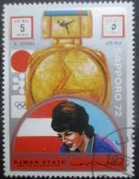 |
| commons.wikimedia.org | File:1972 stamp of Ajman Erhard Keller.jpg - Wikimedia Commons | 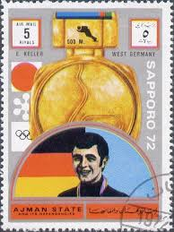 |
| www.ebay.com | Tangstamps: Local China Japanese Colony Manchukuo overprint ... |  |
| it.wikipedia.org | File:1972 stamp of Ajman Monika Pflug.jpg - Wikipedia | 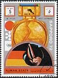 |
| commons.wikimedia.org | File:1972 stamp of Ajman Zimmerer+Utzschneider.jpg ... | 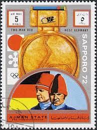 |
| esam.ir | تمبر عجمان 1972 المپیک زمستانی ساپورو گمرکی (92)4 | 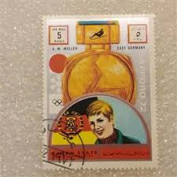 |
| oldthing.de | Ajman Mi.Nr.1662B Olympia 72.. | Briefmarken günstig | 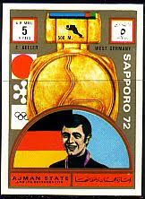 |
| jenikirbyhistory.getarchive.net | 7 Ard schenk on stamps Images: PICRYL - Public Domain Media ... | 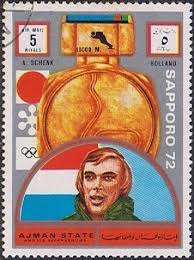 |
| glhsonline.org | GAY AND LESBIAN HISTORY ON STAMPS JOURNAL | 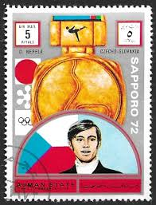 |
| boudewijnhuijgens.getarchive.net | 1972 CPA 4125 - postal stamp, Soviet Union - PICRYL - Public ... | 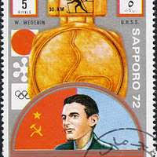 |
| it.todocoleccion.net | 1972 - ajman - juegos olimpicos sapporo 72 - g. - Acquista ... | 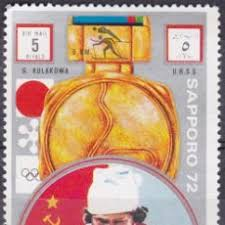 |
| esam.ir | تمبر عجمان 1972 المپیک زمستانی ساپورو گمرکی (92)4 | 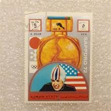 |
| en.wikipedia.org | Walter Plaikner - Wikipedia |  |
| www.avionstamps.com | Hungary 1966 Football World Cup Perf Set Of 9 Unmounted Mint ... |  |
| itoldya420.getarchive.net | Etiketter för tändsticksaskar, från Svenskt Industri- och ... | 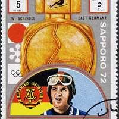 |
| pantheon.world | Greatest Japanese Skiers | Pantheon | 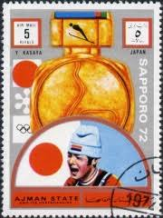 |
| www.avionstamps.com | Ajman 1972 Sapporo Winter Olympic Gold Medallists ... | 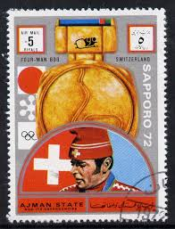 |
| www.avionstamps.com | Ajman 1972 Sapporo Winter Olympic Gold Medallists - East ... | 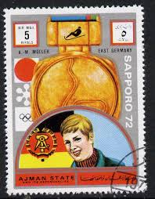 |
| en.todocoleccion.net | 1972 - ajman - juegos olimpicos sapporo 72 - a. - Buy Stamps ... | 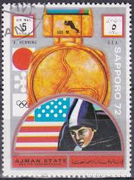 |
| www.ebay.com | Ajman Sport Sapporo Winter Olympics Chempion F.Ochoa Spain ... | 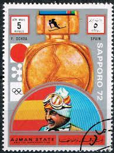 |
| www.todocoleccion.net | sello ajman 1972 - medallistas oro -juegos olím - Compra ... | 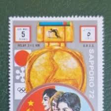 |
| www.avionstamps.com | Ajman 1972 Sapporo Winter Olympic Gold Medallists ... | 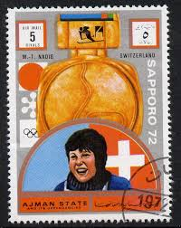 |
| www.ebay.com | STAMPS ARAB AJMAN SPORTS OLYMPIC GAMES 1972 ... | 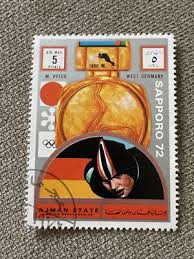 |
| www.vivido.cz | Zimné olympijské hry Sapporo - Filatelia a numizmatika - www ... | 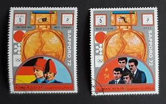 |
| oldthing.de | Ajman Mi.Nr.1638B Olympia 72.. | Briefmarken günstig | 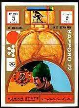 |
| www.avionstamps.com | Ajman 1972 Sapporo Winter Olympic Gold Medallists ... | 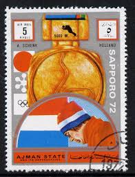 |
| www.tiktok.com | Pierwszy Medal Na Igrzyskach | TikTok | 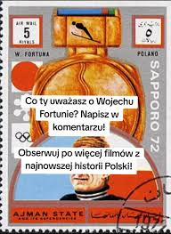 |
| www.alamy.com | Wehling hi-res stock photography and images - Alamy | 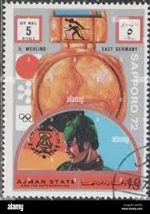 |
| www.ebay.com | Ajman Sport Sapporo Winter Olympics Chempion Lundback Sweden ... | 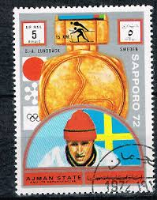 |
| www.ebid.net | Sverige Sweden 1992 Animals 6 Kr Used Stamp Squirrel on eBid ... |  |
| timelessmoon.getarchive.net | The Soviet Union 1968 CPA 3692 stamp (Medals and Cups ... | 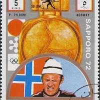 |
| www.dreamstime.com | Post Stamp Printed in Ajman State for the Winter Olympics in ... |  |
| www.avionstamps.com | Ajman 1972 Sapporo Winter Olympic Gold Medallists - USSR ... | 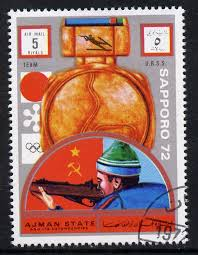 |
| en.wikipedia.org | Barbara Cochran - Wikipedia | 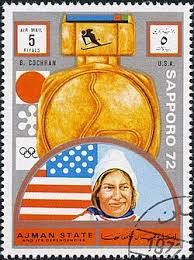 |
| www.ebay.fr | L5099 Umm-Al-Qiwain - 1972 médaille jeux olympique - Sapporo ... | 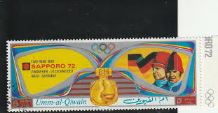 |
| www.instagram.com | Merry Christmas! The United States Postal Service issued ... | 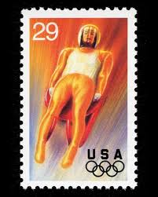 |
| ar.wikipedia.org | ملف:1972 stamp of Ajman Ulanov+Rodnina.jpg - ويكيبيديا | 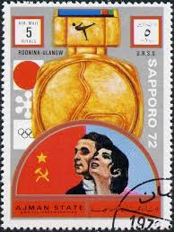 |
| www.alamy.com | Kulakova hi-res stock photography and images - Alamy | 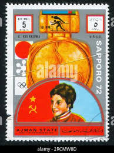 |
| postalmuseum.si.edu | Olympics | National Postal Museum | 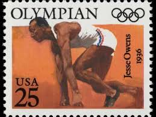 |
| www.shutterstock.com | 7+ Hundred Sapporo Stamps Royalty-Free Images, Stock Photos ... |  |
| www.mysticstamp.com | 2369 - 1988 22c Winter Olympics - Mystic Stamp Company | 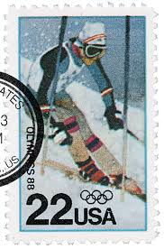 |
| www.mysticstamp.com | C109-12 - 1983 35c 23rd Summer Olympics '84 - Mystic Stamp ... | 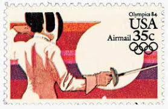 |
| www.kenmorestamp.com | Old Olympic Stamps | Olympic Games Stamps | Kenmore Stamp |  |
| www.mysticstamp.com | 2082-85 - 1984 20c Los Angeles Summer Olympics - Mystic ... | 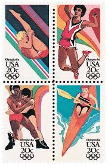 |
| www.ebay.ca | Ajman State Munchen Munich Olympics 1972 Stamp Sheet | eBay | 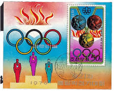 |
| www.marci-postale.com | Nadia Comăneci on Postal Stamps | 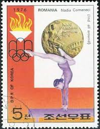 |
| en.wikipedia.org | Tennis at the 1988 Summer Olympics – Men's doubles - Wikipedia | 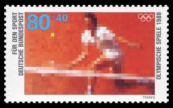 |
| info.mysticstamp.com | Olympic Games | Mystic Stamp Discovery Center | 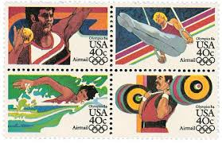 |
| www.owlsandbooks.co.uk | BOOK STAMPS UMM AL QIWAIN | 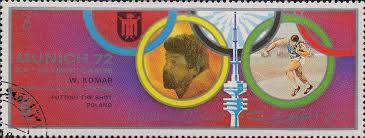 |
| chicagovintageposters.com | Original Vintage Poster 1936 OLYMPIC GAMES BERLIN - JAPANESE ... | 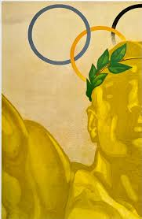 |
| www.mysticstamp.com | 2067-70 - 1984 20c 14th Winter Olympic Games - Mystic Stamp ... | 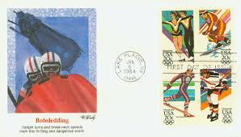 |
| dekalbhistory.org | The 1996 Olympic Games - DeKalb History Center | 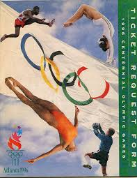 |
| postermuseum.com | Moscow 1980 Olympics Poster – Poster Museum | 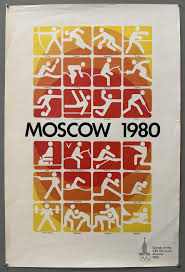 |
| www.facebook.com | 1972 Munich, Bavaria Olympic stamps value? | 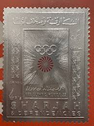 |
| www.postbeeld.com | Stamp 1972, Ajman Olympic winter winners s/s, 1972 ... | 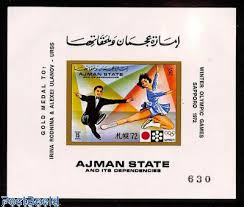 |
| www.mysticstamp.com | 3995 - 2006 39c 2006 Winter Olympic Games - Mystic Stamp Company | 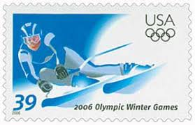 |
| www.mysticstamp.com | 2048-51 - 1983 13c Los Angeles Summer Olympics - Mystic ... | |
| www.mysticstamp.com | C101-12 - 1983 23rd Summer Olympics '84, Complete Set of 12 ... |
{kind=link}
{kind=link}
{kind=link}
{kind=link}